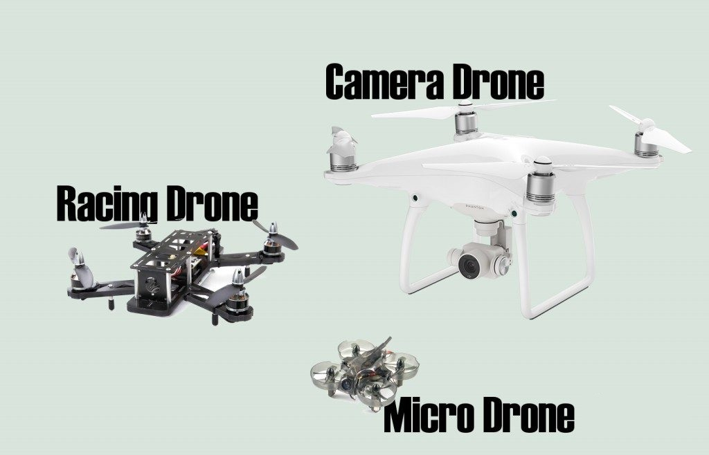
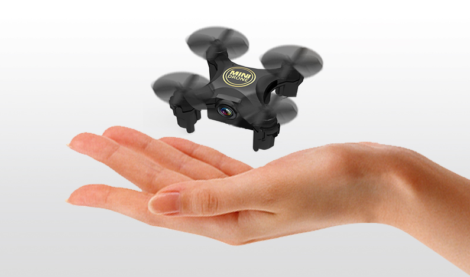
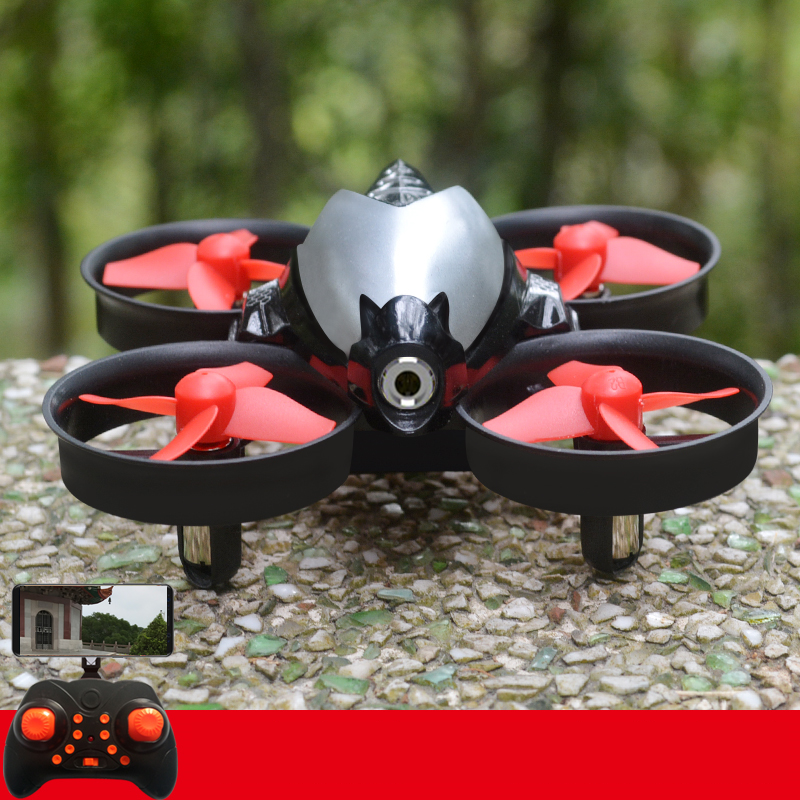
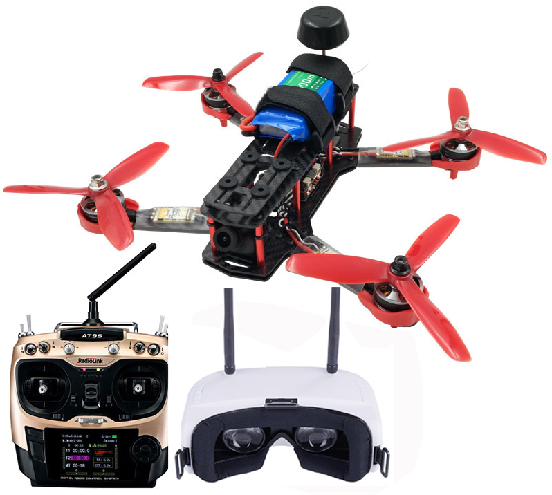
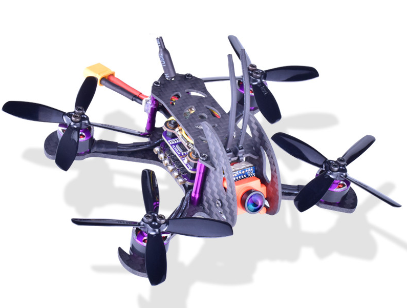
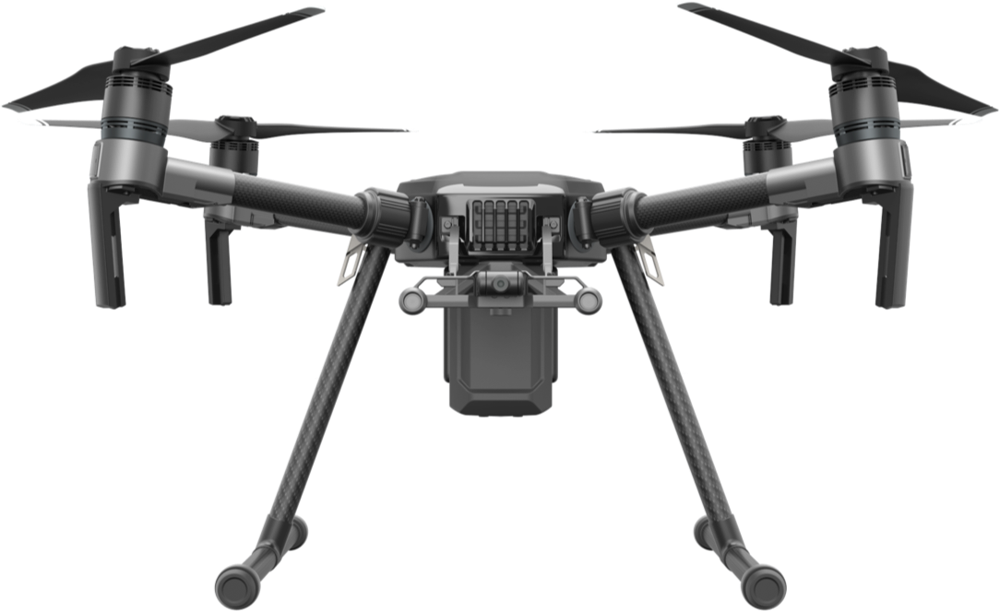

带你认识无人机（四轴）
无人机是无人驾驶飞机的简称，利用无线遥控器和自身程序控制的不载人飞机。
从结构上主要由固定翼无人机、无人直升机、多旋翼无人机三大平台，其它小种类无人机平台包括无人飞艇、伞翼无人机、扑翼无人机等。
由于消费机无人机一般采用成本较低的多旋翼平台。所以无人机爱好者们称呼无人机时一般都指多旋翼无人机，尤其指其中的四旋翼（四轴）无人机。
在这篇文章中，我们将讨论几种常见的四旋翼无人机，以下简称四轴或者无人机。这些四轴可以由无人机爱好者自行组装，也可以是厂商推出的成品整机。主要分为一下几类：
- 玩具四轴
- 竞赛四轴
- 航拍四轴
 下面将逐一介绍。
玩具四轴
玩具四轴应该算是市面上存量最大的无人机了，它的价格可以低至几十块钱。一般都比较小，通常都没有手掌大。相比于其他的无人机，它们的重量更轻，而且比较耐幢，但是马力和速度也相对较弱。
这些玩具四轴也被称为“迷你有刷四轴”，因为它们一般都使用有刷的真空杯电机作为动力源。（注：大型四轴为了减少摩擦，一般都会使用无刷电机来提高效率）
总结：
- 价格：几时到两三百不等
- 尺寸：跟手掌差不多大
- 重量：一般小于五十克
- 特点：适合室内飞行、适合新手
普通玩具四轴 这些玩具级的普通微型四轴非常适合小白玩家，由于这种无人机非常耐摔，所以初学者可以直接通过遥控器来学习飞行，不用害怕损坏或者炸机。

有些玩具四轴可能会携带一个低质量的摄像头。但是这些摄像头基本上没有什么用处，分辨率很低，根本没法拍摄一张清晰的照片，更别说拍摄一段流畅的视频了。它们也基本上没法用来FPV飞行。所以，不用期待一个便宜的玩具四轴能有一个好的摄像头。
FPV玩具四轴 这些带有FPV模块的微型四轴要更先进一些，利用配套的遥控器和FPV眼镜，它们能够被当做一个全功能的迷你四轴来用。

你可以自己搭建你自己的四轴，并且安装FPV系统，但是如果你没有相应的电子电路知识和技能，一些便宜的到手即飞的FPV玩具四轴也是一个不错的选择。这是一个相对便宜的方式让你能够体验FPV飞行。
注：FPV(First-person view), 第一人称视角。 飞行员通过PFV显示，可以看到飞机的视野
竞赛四轴
竞赛四轴也就是我们常说的穿越机。速度快，可操作性强，而且比较耐摔。它们的轴距一般在200mm到250mm之间。但是最大飞行速度可能达到200公里每小时。

不像玩具四轴那么简单，用了无刷电机来提供更强大的动力。一般标配一个内置摄像头，飞手能够以飞机的视角来操控无人机。(FPV)
总结：
- 价格：一千到几千不等
- 尺寸：轴距平均在200mm到250mm之间
- 重量：400g到600g之间
- 特点：速度快，操作性强，适合室内外穿越
自行组装或者到手即飞 大多数爱好者的竞赛飞机都是自行组装的。对于电子不是很懂的玩家的学习曲线可能会有点长，但是很多时候自行组装中获得的乐趣并不亚于在飞飞机过程中获得的乐趣。你能够自己选择自己想要的轴距，自己安装和配置软件，最后根据你喜欢的飞行方式来调整参数。
![DIY四轴]]({filename}images/2018/09/05.jpg)
如果你不喜欢自己DIY，想让事情简单一些，直接买到手即飞套装是个不错的选择，能够避免很多DIY过程中的麻烦。

不同尺寸的穿越机 现在有很多不同尺寸的穿越机，飞机的尺寸其实是由螺旋桨的尺寸决定的。5寸桨是玩家中最流行的尺寸，相对比较容易组装，有足够的能力搭载一个高清摄像头。相对于其他尺寸的四轴，5寸四轴的配件是最容易找到，最便宜的。碰到问题时在社区寻找支持也是最容易的。
-
2寸，3寸，4寸相对小些，适合室内飞，或者室外无风环境。它们适合狭小的空间飞，在公园飞也由于声音较小而不至于打扰到别人。
-
5寸，6寸是穿越机最常见的尺寸。他们是最通用的，它们可以承载一块电量很大的电池，同时具备难以置信的操作性，安装一个好一点的高清摄像头也不会影响到它的飞行性能。
- 7寸或者更大，适合最求更大范围飞行，更好能效以及更大尺寸的惯性导航系统的玩家。这类四轴以牺牲灵活性为代价提供了更大的能力和空间去携带更多外设和更大的电池。
航拍四轴
航拍四轴主要用来拍摄高分辨率专业的空中镜头。它们一般都是预先装好的，价格比发烧友级别的四轴要贵些，一般搭载高端照相机，GPS导航，制造工艺也会更加精良。

大疆是航拍无人机行业的领军者，其他知名的厂家有3DR，GoPro，小米，Walkera等等。
总结:
- 价格：几千到几万不等
- 尺寸：轴距平均在300mm到400mm之间
- 重量：400g到600g之间
- 特点：工艺精良，软件成熟，飞行稳定，适合商业航拍等
图片均来自互联网，参考原文：https://oscarliang.com/types-of-drones/
There are no comments yet.